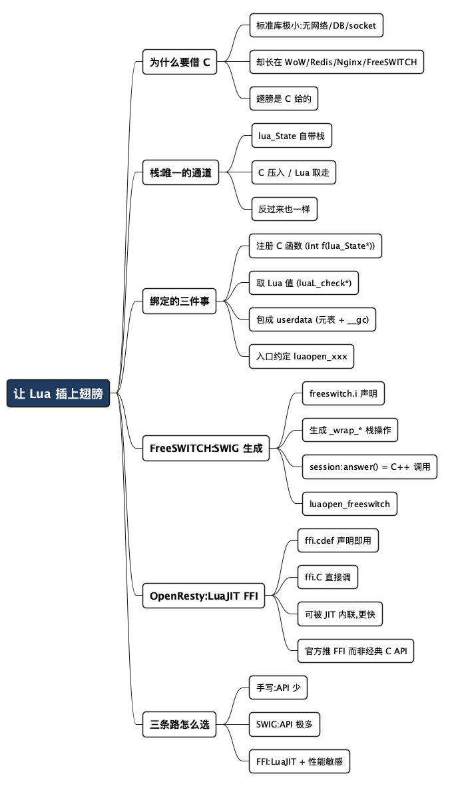

让 Lua 插上翅膀：C 与 Lua 是怎么绑在一起的
Posted on 四 01 10月 2026 in Tech
| Abstract | 让 Lua 插上翅膀：C 与 Lua 是怎么绑在一起的 |
|---|---|
| Authors | Walter Fan |
| Category | Tech |
| Status | v1.0 |
| Updated | 2026-10-01 |
| License | CC-BY-NC-ND 4.0 |
大纲
展开看看
- 一个残酷的事实：Lua 标准库里没有网络、没有数据库，连读文件都很朴素。它能干大事，全靠借 C 的力。
- 栈是唯一的通道：C 和 Lua 不共享内存视图，所有数据都过一个虚拟栈——C 往上压，Lua 取走；反过来也一样。理解了栈，就理解了绑定的一半。
- 三件事撑起全部绑定：把 C 函数注册给 Lua 调；把 Lua 值取出来喂给 C；把 C 的对象/指针包成 Lua 能安全拿着的 userdata。
- FreeSWITCH：SWIG 帮你把胶水写完：
freeswitch.i一份接口声明，SWIG 生成几万行_wrap_*栈操作函数，session:answer()背后就是一次 C++ 调用。 - OpenResty：LuaJIT FFI 干脆不写胶水：
ffi.cdef声明 C 签名，ffi.C.printf(...)直接调，还能被 JIT 编译进热路径。 - 两条路怎么选：手写栈操作、SWIG 预生成、FFI 直调，各自的适用场景和代价。
- 收尾：Lua 的翅膀是 C 给的；想清楚"哪一半用 Lua、哪一半留在 C"，才用得好这门语言。
Lua 的标准库小得让人吃惊。你想发个 HTTP 请求？没有。想连数据库？没有。想开个 socket？也没有。连读写文件都只有最朴素的 io.open。一门 2020 年代还在被大量新项目采用的语言，标准库却像是上世纪的产物。
但它偏偏长在最能干的一批软件里：魔兽世界用它写插件，Redis 用它跑原子脚本，Nginx（OpenResty）用它扛住百万并发，FreeSWITCH 用它控制每一通电话的走向。一门"什么都不会"的语言，怎么会出现在这些地方？
答案就一句话：Lua 自己不长翅膀，它的翅膀是 C 借给它的。 Lua 从设计第一天就不打算独立飞——它要长在一个 C/C++ 写的宿主进程里，通过一套干净的接口，把宿主已有的能力（网络、数据库、媒体处理、协议栈）借过来用。这篇就把这套接口拆开：C 和 Lua 到底是怎么绑在一起的,然后看两个真实项目——FreeSWITCH 和 OpenResty——用两种截然不同的风格把这件事做到极致。
这篇专讲"C 怎么把能力递给 Lua"这层底座。至于拿到能力之后,Lua 在 FreeSWITCH 里具体怎么用(四个挂载点、最佳实践、坑),我另写过一篇《重拾 Lua:从月亮语言到 FreeSWITCH 里的胶水》,两篇正好互补。
栈：C 和 Lua 之间唯一的通道
先立一个最重要的心智模型,后面全靠它。
C 和 Lua 活在两个世界里。C 的世界是裸内存、指针、malloc/free,你说了算;Lua 的世界是带垃圾回收的托管值,解释器说了算。这两个世界不能直接互相读写对方的变量——C 不能随手改一个 Lua 的 table,Lua 也不能随手解引用一个 C 指针,否则垃圾回收和内存安全立刻崩掉。
那怎么传数据?靠一个虚拟栈。 每个 Lua 状态机(lua_State)自带一个栈,它是 C 和 Lua 之间唯一的中转站:
- C 想给 Lua 传值,就把值压到栈上(
lua_pushnumber、lua_pushstring……),Lua 那边去栈上取。 - Lua 调用一个 C 函数时,参数已经被解释器摆在栈上了,C 函数用
lua_tonumber(L, 1)、lua_tostring(L, 2)按位置取下来。 - C 函数算完,把返回值压回栈上,然后
return一个整数告诉 Lua "我压了几个返回值"。
用最短的一段 C 代码感受一下,宿主怎么起一个 Lua 引擎、跑一段脚本:
#include <lua.h>
#include <lauxlib.h>
#include <lualib.h>
int main(void) {
lua_State *L = luaL_newstate(); // 新建一个状态机(带自己的栈)
luaL_openlibs(L); // 打开标准库
luaL_dostring(L, "print('Hello from Lua')"); // 跑一段脚本
lua_close(L); // 收摊,释放
return 0;
}
lua_State *L 是所有 C API 的第一个参数——它就是那个"世界",栈也在里面。把"C 和 Lua 靠一个栈来回倒数据"这句话刻进脑子,后面所有绑定套路都是它的变体。
下面这张图是整篇文章的骨架:
sequenceDiagram
participant Lua as Lua 脚本
participant Stack as 栈 (lua_State)
participant C as C / C++ 世界
Lua->>Stack: 调用 answer()，压入 [self] [arg1]
Stack->>C: 取参，调 switch_channel_answer(...)
C->>C: 真正干活的 C 代码
C->>Stack: 压入 [返回值]
Stack->>Lua: 取返回值，= ret
不管是手写、SWIG 生成还是 FFI,本质都是这张图。区别只在于:中间那层"取参—调用—压结果"的胶水,是谁写、什么时候写、要不要写。
撑起全部绑定的三件事
所谓"绑定"(binding),说穿了就是三件事。把这三件搞明白,任何 Lua 扩展的源码你都能看懂。
一、把 C 函数注册给 Lua 调
C 里符合特定签名的函数,可以注册进 Lua,让脚本像调普通 Lua 函数一样调它。这个签名固定是 int (*)(lua_State *L)——参数只有状态机,返回值是"我压了几个返回值"。
// 一个能被 Lua 调用的 C 函数:把两个数相加
static int l_add(lua_State *L) {
double a = luaL_checknumber(L, 1); // 取第 1 个参数
double b = luaL_checknumber(L, 2); // 取第 2 个参数
lua_pushnumber(L, a + b); // 压入结果
return 1; // 告诉 Lua:我压了 1 个返回值
}
// 注册进 Lua,起个名字叫 add
lua_pushcfunction(L, l_add);
lua_setglobal(L, "add");
注册完,脚本里就能写 print(add(3, 4)),打印 7。luaL_checknumber 会顺带做类型检查,参数不是数字就报错——这是 luaL_check* 系列比裸 lua_to* 更常用的原因。
现实里 C 库有几百个函数要注册,不会一个个 setglobal,而是打包成一个模块。约定俗成,模块的入口函数叫 luaopen_<模块名>:
static const luaL_Reg mylib[] = {
{"add", l_add},
{"sub", l_sub},
{NULL, NULL} // 结尾哨兵
};
int luaopen_mylib(lua_State *L) {
luaL_newlib(L, mylib); // 建一个表,把函数都塞进去
return 1; // 把这个表返回给 require
}
脚本里 local m = require("mylib"); m.add(1, 2) 就能用了。记住 luaopen_xxx 这个名字,一会儿在 FreeSWITCH 源码里会原样撞见它。
二、把 Lua 值取出来喂给 C
这是第一件事的反面。C 函数被调用时,参数在栈上,你按位置和类型取:lua_tonumber(L, 1)、lua_tostring(L, 2)、lua_toboolean(L, 3)。要遍历一个 Lua table(比如脚本传进来一个配置),就用 lua_getfield、lua_next 一层层拆。
这一步的麻烦不在语法,在边界检查:栈上到底有几个值?类型对不对?table 里那个 key 存不存在?漏一个检查,轻则脚本报错,重则宿主进程段错误。所以真正的绑定代码里,取参前后到处是 luaL_check* 和栈平衡的断言——胶水代码又臭又长,一多半是花在这上面。
三、把 C 对象包成 Lua 能安全拿着的 userdata
前两件传的都是数字、字符串这种简单值。可 FreeSWITCH 要传给脚本的是一个"通话会话"对象,OpenResty 要传的是一个连接、一个 buffer——这些是 C 结构体或 C++ 对象,Lua 没法直接持有。
解决办法叫 userdata:Lua 里一种特殊的值,内部裹着一块 C 内存(或一个指针)。脚本能拿着这个 userdata 传来传去,但不能直接读写里面的内容;想操作它,只能调你为它注册的方法。再给这个 userdata 挂一个元表(metatable),把 __index 指向一张方法表,脚本里 session:answer() 就能找到对应的 C 函数。userdata 还能挂 __gc 元方法,让 Lua 垃圾回收时顺便把底层 C 资源释放掉——这是防内存泄漏的关键。
// 大意:把一个 C 指针包成带方法的 userdata
MySession **ud = lua_newuserdata(L, sizeof(MySession *));
*ud = create_session(); // 底层 C 对象
luaL_getmetatable(L, "MySession"); // 取事先注册好的元表
lua_setmetatable(L, -2); // 挂上去
// 现在脚本拿到的这个值,session:xxx() 会走元表里的方法
这三件事——注册 C 函数、取 Lua 值、包装 C 对象——就是所有 Lua-C 绑定的全部内容。 手写当然可以,但一个像 FreeSWITCH 那样有上千个 API 的项目,手写几万行栈操作是要命的。于是有了两条省事的路。
FreeSWITCH:让 SWIG 把胶水一次写完
FreeSWITCH 是个开源软交换机(处理呼叫、媒体、SIP 信令的软件电话交换机),几十万行 C/C++。它要把成百上千个 switch_* 能力暴露给 Lua 脚本——按上面手写,得写到天荒地老。它的做法是:用 SWIG 自动生成绑定。
SWIG(Simplified Wrapper and Interface Generator)是个老牌工具:你给它一份 C/C++ 的接口声明,它替你生成任意目标语言(Lua、Python、Java……)的绑定胶水。上面那三件苦活,SWIG 全包了。
一份 .i 接口文件
FreeSWITCH 在 src/mod/languages/mod_lua/freeswitch.i 里声明要暴露什么。文件头一句就是:
%module freeswitch
这决定了生成出来的模块叫 freeswitch——脚本里那个全局的 freeswitch.consoleLog(...) 就是从这来的。接口文件里还 %include 了 C++ 的类声明(CoreSession、Event、API、Stream、EventConsumer 等,声明在 src/include/switch_cpp.h),并为 Lua 定义了 LUA::Session 这样的子类。
SWIG 生成几万行 _wrap_*
构建时,Makefile.am 里这一句把 SWIG 跑起来:
mod_lua_wrap.cpp: mod_lua_extra.c
swig -lua -c++ -I../../../../src/include -oh mod_lua_wrap.h -o mod_lua_wrap.cpp freeswitch.i
-lua -c++ 是告诉 SWIG:目标是 Lua,源是 C++。产物 mod_lua_wrap.cpp 就是那份自动生成的胶水,里面全是这样的函数:
static int _wrap_CoreSession_answer(lua_State* L) {
// (SWIG 生成) 从栈上取出 self 指针,做类型检查,
// 调用 C++ 的 CoreSession::answer(),
// 把返回值压回栈上
...
}
看这个函数的形状——static int、参数 lua_State* L、从栈取参、调 C++、压返回值——跟前面我们手写的 l_add 一模一样。 SWIG 只是替你把上千个这样的 _wrap_* 批量写了出来。它还生成方法表,把 Lua 里的名字映射到这些 wrapper:
// (SWIG 生成) 大意
{ "answer", _wrap_CoreSession_answer },
{ "hangup", _wrap_CoreSession_hangup },
...
于是脚本里 session:answer(),冒号调用把 session 当作第一个参数(self)压栈,SWIG 生成的 _wrap_CoreSession_answer 从栈上把它还原成 C++ 的 CoreSession*,调真正的 answer()。这就是那句"脚本里一个 session:answer() 背后就是一次 C++ 调用"的全部真相。
那个熟悉的 luaopen_freeswitch
还记得第二节说的模块入口约定吗?SWIG 生成的入口就叫 luaopen_freeswitch:
#define SWIG_name "freeswitch"
#define SWIG_init luaopen_freeswitch
而 mod_lua.cpp 在每次创建一个新的 Lua 状态机时,亲手调它:
static lua_State *lua_init(void) {
lua_State *L = luaL_newstate();
luaL_openlibs(L);
luaopen_freeswitch(L); // 把整个 freeswitch 表注册进这个状态机
...
return L;
}
一路对下来:我们手写的 luaopen_mylib → SWIG 生成的 luaopen_freeswitch → 宿主 mod_lua.cpp 在建状态机时调用它。同一个约定,从玩具例子贯穿到几十万行的生产系统。 看懂了小的,大的就不神秘了。
SWIG 这条路的代价也很实在:生成的 mod_lua_wrap.cpp 是个几万行的庞然大物,几乎没法读、更没法手改;.i 文件的写法有它自己的一套脾气,C++ 里稍微花哨点的模板、重载,SWIG 处理起来就会别扭。它换来的是"一次声明,批量生成",对一个 API 面极大的项目来说,这笔买卖划算。
OpenResty:LuaJIT FFI 干脆不写胶水
FreeSWITCH 是"把胶水自动生成";OpenResty 走了另一条更激进的路——在 Lua 这一侧,干脆不写胶水。
先说个前提:OpenResty 跑的不是标准 Lua,而是 LuaJIT(lua-nginx-module 的官方说明是"embeds LuaJIT 2.0/2.1 into Nginx",并且从 v0.10.16 起明确不再支持标准 Lua 解释器)。LuaJIT 是 Lua 5.1 的一个即时编译(JIT)实现,把热点 Lua 代码直接编成机器码,性能能逼近原生 C。而 JIT 之外,LuaJIT 还带来一个改变游戏规则的东西:FFI。
用 ffi.cdef 声明,直接调
FFI(Foreign Function Interface)让你在纯 Lua 代码里,声明一个 C 函数的签名,然后直接调它——不写一行 C 胶水,不生成任何 wrapper。看 LuaJIT 官方文档里的这个例子:
local ffi = require("ffi")
ffi.cdef[[
int printf(const char *fmt, ...);
]]
ffi.C.printf("Hello %s!", "world")
三行。ffi.cdef 里写的就是 C 头文件里的原样声明,LuaJIT 直接解析它;ffi.C 是默认的 C 库命名空间(libc 那些符号都在里面);ffi.C.printf(...) 就直接调到了 libc 的 printf。要用别的库,ffi.load("z") 加载 libz,拿到它的命名空间再调。结构体也能声明和创建:
ffi.cdef[[
typedef struct { uint8_t red, green, blue, alpha; } rgba_pixel;
]]
local img = ffi.new("rgba_pixel[?]", n) -- 一个变长数组
对比一下就看出反差了:SWIG 那边要写 .i 文件、跑生成、编译几万行 wrapper;FFI 这边三行 Lua,连编译步骤都没有。手写胶水 → SWIG 生成胶水 → FFI 不要胶水,这是一条"胶水越来越少"的演化线。
为什么 OpenResty 官方推 FFI
不只是省事,还更快。这一点 OpenResty 自己讲得很直白。它的 ngx.* API 原本是用经典 Lua C API(就是第二节那套栈操作)实现的,但官方后来用 FFI 重写了一大部分,放进 lua-resty-core 库,并且从某个版本起强制加载。原因写在 lua-resty-core 的说明里(直译):
"它的 FFI 实现比 ngx_lua 模块的 Lua C API 更快、更安全、也更完整。"
"基于 FFI 的 Lua API 能配合 LuaJIT 的 JIT 编译器工作。ngx_lua 默认的 API 基于标准 Lua C API,永远不会被 JIT 编译,用户 Lua 代码始终以(慢的)解释方式运行。"
关键就在这:经典 C API 注册的那些 lua_CFunction,LuaJIT 无法把它们编进 JIT 热路径;而 FFI 调用可以被内联进 JIT 编译出来的机器码。 在一个每秒要处理海量请求的网关里,这个差别是实打实的吞吐。
这里也有个诚实的边界:FFI 的性能优势要建立在周围的 Lua 代码确实跑上了 JIT 热路径之上。lua-resty-core 自己也提醒,如果你的 Lua 代码没被 JIT 编译(还在解释执行),用 FFI 反而可能更慢。天下没有白来的快。
三条路,怎么选
把手写、SWIG、FFI 放一起对比,选择就清楚了。
| 手写 C API | SWIG 生成 | LuaJIT FFI | |
|---|---|---|---|
| 胶水谁写 | 你,一行行栈操作 | SWIG 从 .i 自动生成 |
没有胶水,cdef 声明即用 |
| 依赖 | 标准 Lua/LuaJIT 都行 | 标准 Lua/LuaJIT 都行 | 只有 LuaJIT 有 |
| 能否 JIT | 不能内联进热路径 | 不能内联进热路径 | 可被 JIT 内联,最快 |
| 适合 | API 很少、要精确控制 | API 极多的大型 C++ 项目 | LuaJIT 环境、性能敏感 |
| 代价 | 量大时写到吐 | 生成物巨大、难读难改、.i 有脾气 |
绕过 Lua 类型安全,声明写错会段错误 |
一句话决策:
- 你在标准 Lua 上,只想把十来个 C 函数递给脚本 —— 手写,清清楚楚。
- 你有一个几百上千 API 的 C++ 项目要整体暴露(像 FreeSWITCH) —— 上 SWIG,一次声明批量生成。
- 你在 LuaJIT 上,又在乎性能(像 OpenResty) —— 用 FFI,少写胶水还能吃到 JIT 红利,但声明务必小心,写错类型是直接崩进程的。
FFI 那条最后一句得强调:它把 C 的签名直接暴露给 Lua,也就把 C 的不安全一并带了进来。cdef 里少写个 const、struct 字段顺序摆错,不会像经典 API 那样报个 Lua 错误,而是可能直接段错误。FFI 给你的是 C 的翅膀,连 C 的重力也一起给了。
总结:翅膀是 C 给的,但方向得自己把
回到开头那个问题:一门标准库小得可怜的语言,凭什么长在这么多庞然大物里?
凭的就是它跟 C 之间那条又窄又干净的通道——一个栈,三件事。C 把自己积累了几十年的能力(协议栈、数据库、媒体编解码)顺着这条通道递过来,Lua 负责把这些能力灵活地编排成业务逻辑。FreeSWITCH 用 SWIG 把这条通道批量拓宽,OpenResty 用 FFI 把它修得又快又直——手段不同,吃的都是同一口"借 C 生态"的饭。
所以用好 Lua 的关键,从来不是把 Lua 本身学多深,而是想清楚一条边界:哪一半交给 Lua(需要经常改、要灵活的黏合逻辑),哪一半留在 C(性能敏感、稳定的重活)。 把该 C 的重活硬塞进 Lua,你会失去性能;把该灵活的逻辑焊死在 C 里,你会失去 Lua 存在的意义。
上手清单
- [ ] 记住那张图:栈是 C 和 Lua 之间唯一的通道,压入取出,来回倒。
- [ ] 绑定就三件事:注册 C 函数、取 Lua 值、把 C 对象包成 userdata(带元表 +
__gc)。 - [ ] 模块入口约定是
luaopen_<模块名>——从玩具例子到luaopen_freeswitch是同一个套路。 - [ ] API 极多的 C++ 项目考虑 SWIG:一份
.i,批量生成_wrap_*;代价是生成物巨大、难改。 - [ ] LuaJIT 环境优先 FFI:
ffi.cdef声明 +ffi.C直调,可被 JIT 内联;但声明写错会段错误,当心。 - [ ] 性能敏感时,别忘了:经典 C API 进不了 JIT 热路径,FFI 才行——前提是周围代码确实在热路径上。
- [ ] 动手前先划边界:哪一半用 Lua,哪一半留在 C。
全文思维导图
@startmindmap
<style>
mindmapDiagram {
node {
BackgroundColor #F8F9FA
RoundCorner 10
Padding 10
FontSize 13
}
:depth(0) {
BackgroundColor #1E3A5F
FontColor white
FontSize 18
FontStyle bold
}
:depth(1) {
FontSize 15
FontStyle bold
}
:depth(2) {
FontSize 13
}
}
</style>
* 让 Lua 插上翅膀
** 为什么要借 C
*** 标准库极小:无网络/DB/socket
*** 却长在 WoW/Redis/Nginx/FreeSWITCH
*** 翅膀是 C 给的
** 栈:唯一的通道
*** lua_State 自带栈
*** C 压入 / Lua 取走
*** 反过来也一样
** 绑定的三件事
*** 注册 C 函数 (int f(lua_State*))
*** 取 Lua 值 (luaL_check*)
*** 包成 userdata (元表 + __gc)
*** 入口约定 luaopen_xxx
** FreeSWITCH:SWIG 生成
*** freeswitch.i 声明
*** 生成 _wrap_* 栈操作
*** session:answer() = C++ 调用
*** luaopen_freeswitch
** OpenResty:LuaJIT FFI
*** ffi.cdef 声明即用
*** ffi.C 直接调
*** 可被 JIT 内联,更快
*** 官方推 FFI 而非经典 C API
** 三条路怎么选
*** 手写:API 少
*** SWIG:API 极多
*** FFI:LuaJIT + 性能敏感
@endmindmap

本作品采用知识共享署名-非商业性使用-禁止演绎 4.0 国际许可协议进行许可。 欢迎在我的个人网站 https://www.fanyamin.com 访问原文并评论。